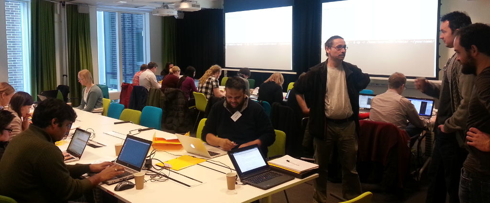

Learning Genomics and Bioinformatics in 2025
By Samuel on
Bioinformatics is growing in the clinical field, and in my job in a clinical microbiology lab, I’m increasingly asked for tips about how to get into bioinformatics or genomic data science.
As I recently took the plunge into genomics from my PhD field of small molecular structures and machine learning, as part of getting into my current position, I thought to write down what I learned in the process.
What I tried
I actually tried for years to get into genomics, and tried quite a few things, most of which failed.
- I took a 3-day hands-on course in NGS bioinformatics at SciLifeLab , and although it gave a great glimpse into some of the commonly used tools, I found that the intense course schedule meant that I did not have time to properly process what I learned and have time to play around on my own, lest I would loose focus of the course. (Well, perhaps I got a little too carried away with the workflow tool idea that just popped into my mind at that time too ;))
- I tried watching some videos from the Bioinformatics Specialization on Coursera , but found it way too slow going for someone already quite familiar with the basics.
- I tried solving some bioinformatics programming challenges on Rosalind and while it gave me an idea of some basic bioinformatics algorithms, I didn’t feel it gave me the skills I would need to take on a typical genomics bioinformatician job, where you need to know at least the most common “tools of the trade”, to solve common basic tasks like alignment, assembly and variant calling.
- I tried reading books:
- Bioinformatics Algorithms: An active learning approach . of which the analogies and pace didn’t suit my learning style, as I was looking for more practical, hands-on content.
- Understanding Bioinformatics which was also too slow-going and theoretical for my taste.
- Introduction to Bioinformatics by Arthur Lesk . This was probably nicest among the slew of text-book style bioinformatics books, but was just as the others quite disconnected from the hands-on reality.
- Then I read Bioinformatics Data Skills by Vince Buffalo, and finally found some real hands-on content. It is also structured in a great way, covering general themes such as working with interval data, rather than focusing on specific tools and implementations, which will change every other year anyways.
- I continued with many chapters from the Biostar Handbook which I printed for myself in two volumes on Lulu, and this was spot on the type of content I needed.
- I also bought Bioinformatics: A practical handbook of Next Generation Sequencing and its applications which looks good as a more concise and practical alternative to the Biostar Handbook (and you don’t need to print it yourself).
- Then finally, I signed up for the Genomic Data Science Specialization , and now we’re talking! Finally I had both highly relevant content, a platform to track my progress, and a motivation for finishing it (getting the certificate in the end). This is what finally clicked for me. I actually haven’t finished all the courses just yet, and would also recommend primarily the four first ones, but even the first three-four courses was enough to get me feel confident I could do this as a job, after I finished them. The drawback with this course package is that the exercises are extremely frustrating, as the correct answer requires you to have the exact correct version of software installed, and correctly understanding the question etc. You will need to read up a lot in the forums for tips on getting unstuck.
Anyhow, so what would I recommend to someone learning this anew today?
What I would recommend
After having managed to learn enough genomics to get myself a job in the field, I have also seen a few new learning tools popping up, in addition to the ones I’ve came across. Thus, my recommendations will be a mix between old and new.
1. Start practicing in your web browser at Sandbox.bio
sandbox.bio is an amazing platform that allows you to run exercises with linux-based tools right in your browser, and getting immediate feedback on how you are doing. You will not get any official credit for this one, but it is a great way to get started.
2. Take the first four courses of the Genomic Data Science specialization
Despite brittle quizzes I still haven’t found a better, more to-the-point set of courses than the ones in the Genomic Data Science Specialization from Johns Hopkins University on Coursera.
I can only recommend the four first courses though, and probably the last one. The Bioconductor one is in dire need for an update.
If you need something that starts a bit more basic and is more gently going, you might try the Bioinformatics Specialization from UC San Diego. But as said, it was not my cup of tea, so go for it on your own risk.
Well, UC San Diego also has a newer specialization called Applied Bioinformatics , and perhaps it is good. I can not tell.
3. Refer to books if you need
Probably the Bioinformatics Data Skills will go a long way to support you here, but if you need more content, especially on some specific sub-topics within hands-on bioinformatics, the Biostar Handbook is quite likely to have you covered.
4. Go deeper with a project or Rosalind exercises
After taking such a specialization, I think you need to start applying your skills on some real projects. So either get a job in genomics, get a side-hustle, or perhaps, if you are interested in digging deeper into the algorithmic side of bioinformatics, you might want to continue doing exercises on Rosalind . This can be super fun and rewarding.
5. Join communities of like-minded people
Start by following experts within your field, and over time add people that you find out are doing interesting work. I personally use Twitter heavily for this, and follow hundreds to thousands of bioinformatics folks , but there is also a whole Mastodon server dedicated to genomics , a Discord chat , and a very thriving community of academics and industry folks in biotech at Bits in Bio .
There are also more chats and communities out there for more niched topics within the genomics field, so you might want to ask around for what people in your particular field of interest is using.
6. Read new papers in the field
Finding out about new tools and papers often happens automatically when you connect to folks in your field, but if you want to be a bit extra pro-active, you might also want to regularly scan the literature for important new methods, tools and datasets.
Following a subfield like bioinformatics on bioRxiv is a great way to do that, as you can spot papers already before they are published (and don’t need to get stuck in a pay wall).
I also have a couple of alerts set up on Google Scholar for particular topics and authors I’m especially interested in.
7. Follow blogs and podcasts according to your interest
Just following what happens via papers, and even via preprints, often means you have a definite delay in terms of what people are up to. The papers are also often quite a condensed version of what is actually going on in people’s minds.
On the other hand, finding real people that has time to mentor you or answer all your questions is not always easy either.
One good additional way to keep up with the developments within your field is thus a kind of middle-ground between these two, by consuming content that is published more often than papers, and have a less formal framing to allow people to expand their thinking more.
Science blogs and podcasts are great for this.
E.g. I’m personally heavily enjoying the Microbinfie Podcast for microbial bioinformatics specifically, and the Bioinformatics CRO Podcast for more general bioinfo content.
Summary
As mentioned before, learning genomics is not trivial, especially if doing it on your own. With the right resources it is possible though, and I hope this post will help you get started, until you find what works best for you.
Also, you’re most welcome to visit back and drop a comment below about how it is going and what you found works for you!
Best of luck!
Edit history:
- 2024-11-17, 00:13 CET: Minor language fixes.